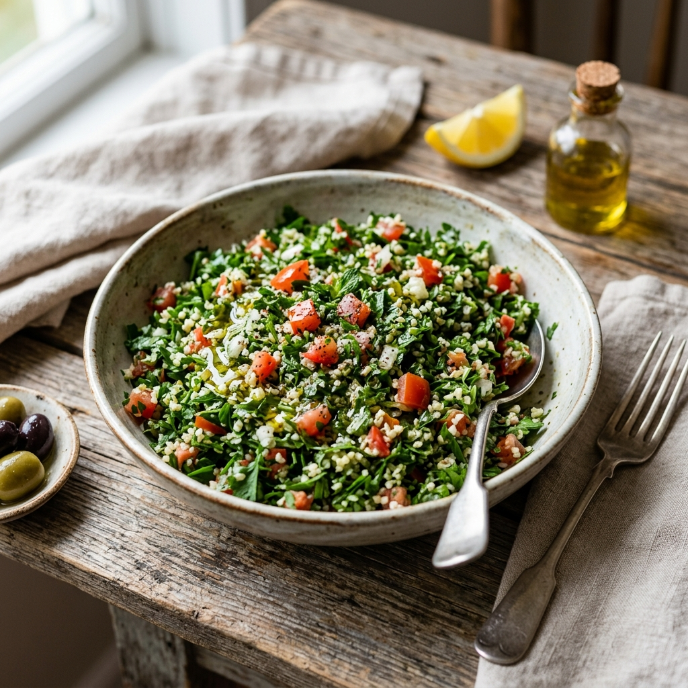

Fräsch Tabbouleh (Persiljesallad)
En explosion av smak med finhackad persilja, mynta, citron och bulgur. Det perfekta fräscha tillbehöret.
Gör så här
1
Skölj bulgurn och blötlägg i kallt vatten i 10 minuter. Krama ur allt vatten.
2
Finhacka persilja och mynta extremt fint. Använd en vass kniv (inga matberedare!).
3
Finhacka tomater och salladslök i små, jämna tärningar.
4
Blanda alla grönsaker och bulgur i en stor skål.
5
Tillsätt olivolja, citronsaft, salt och peppar precis innan servering. Blanda väl.